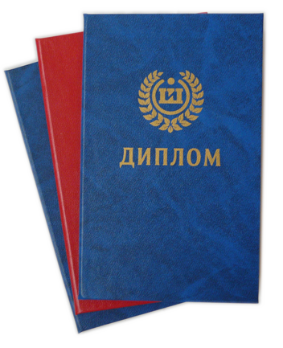

Резюме Инженер по тестированию
Мулько Алексей Михайлович
11.08.1996 - 27 лет.
Гражданство - Россия / Место жительства - Сочи
Контактные данные:
Телефон - +7 900 (286)-58-45
Почта - alexey.mullko21@gmail.com
—👈
—👈
—👈
Образование
—👈
Бакалавр 2021г.:
ЛНУ им. В. Даля
Бизнес-информатика, "Информационная бизнес-аналитика"
Курсы:
Алекс Смитт "Тестирование с нуля до специалиста".
QA Studio "Ручное тестирование".
Алексей Маршал "Тестирование ПО".
Непрерывно совершенствуюсь в данной сфере, используя все возможные открытые источники.
QA-инженер
Коммерческий опыт:
1С БИЗНЕС РЕШЕНИЯ - Ноябрь 2023 — Апрель 2024
Инженер по тестированию:
Ручное тестирование. Ведение тестовой документации, поиск дефектов.
Ключевые навыки на проекте:
Figma Design • Jira • DevTools • Charles • Ручное тестирование • Postman • Тестирование сайтов • Тестирование API
• Функциональное тестирование • Тестирование мобильных приложений • UX тестирование • UI тестирование
КЛЮЧЕВЫЕ НАВЫКИ:
Figma • Jira • DevTools • Charles • Fiddler • Ручное тестирование • Postman • SQL • Git • Тестовая документация
• HTML/CSS • Знание Клиент-серверной архитектуры.
Портфолио:
Кейс 1👈
Кейс 2👈
Кейс 3👈
Кейс 4👈
Дополнительная информация обо мне:
Постоянно развиваю и осваиваю новые технологии, повышая этим свою профессиональную компетентность.
Опыт работы:
— Тестирование веб-сайтов и мобильных приложений.
— Работа с базами данных.
— Работа с требованиями к ПО.
— Работа с системами контроля версий (SVN).
— Участие в полном цикле разработки ПО.
Профессиональные навыки:
Профессиональные навыки:
— Знание методов тестирования и техники тест-дизайна.
— Опыт работы с системами управления тестированием.
— Опыт проведения функционального, регрессионного, интеграционного, нагрузочного
тестирования.
— Опыт написания тестовой документации (тест-планы, тест-кейсы, чек-листы).
— Опыт работы с дефектами (багами) в системах отслеживания ошибок (Jira).
— Знание SQL на уровне простых запросов.
— Опыт работы с снифферами.
— Понимание основных принципов работы сетевых протоколов (TCP/IP, HTTP).
— Английский язык — базовый уровень.
Личные качества:
— Аналитический склад ума.
— Внимательность к деталям.
— Ответственность.
— Умение работать в команде.
— Высокая обучаемость.
...